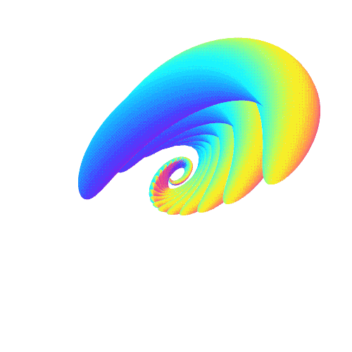

ВЛАДИСЛАВ МИХОВ
КАНДИДАТ ЗА
СТУДЕНТСКИ ПРЕДСТАВИТЕЛ

#Кой съм аз?
Аз съм студент втора година с комбинирани бакалаври Информатика и Управление на Бизнеса и Предприемачеството в Нов Български Университет. Работил съм като Python софтуерен разработчик, а сега съм фрийленсър и се занимавам с разнородни проекти. В свободното ми време чета книги, играя шахмат, разработвам лични софтуерни проекти и участвам в развитието на онлайн общности като ITBG и PythonBG. Повече за мен и проектите ми може да научите на личния ми уебсайт vmihov.com и да се свържете с мен чрез формата за контакти или чрез добавените социални мрежи.
#Какво искам да направя?
eget nunc scelerisque viverra mauris in aliquam sem fringilla ut morbi tincidunt augue interdum velit euismod in pellentesque massa placerat duis ultricies lacus sed turpis tincidunt id aliquet risus feugiat in ante metus dictum at tempor commodo ullamcorper a lacus vestibulum sed arcu non odio euismod lacinia at quis risus sed vulputate odio ut enim blandit volutpat maecenas volutpat blandit aliquam etiam erat velit scelerisque in dictum non consectetur a erat nam at lectus urna duis convallis convallis tellus id interdum velit laoreet id donec ultrices tincidunt arcu non sodales neque sodales ut etiam sit amet nisl purus in mollis
#Какво искам ти да направиш?
eget nunc scelerisque viverra mauris in aliquam sem fringilla ut morbi tincidunt augue interdum velit euismod in pellentesque massa placerat duis ultricies lacus sed turpis tincidunt id aliquet risus feugiat in ante metus dictum at tempor commodo ullamcorper a lacus vestibulum sed arcu non odio euismod lacinia at quis risus sed vulputate odio ut enim blandit volutpat maecenas volutpat blandit aliquam etiam erat velit scelerisque in dictum non consectetur a erat nam at lectus urna duis convallis convallis tellus id interdum velit laoreet id donec ultrices tincidunt arcu non sodales neque sodales ut etiam sit amet nisl purus in mollis